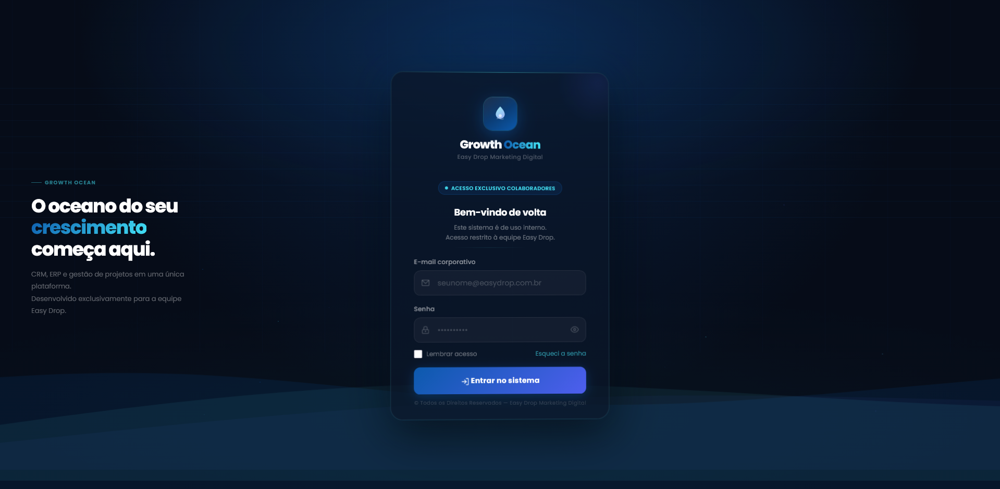
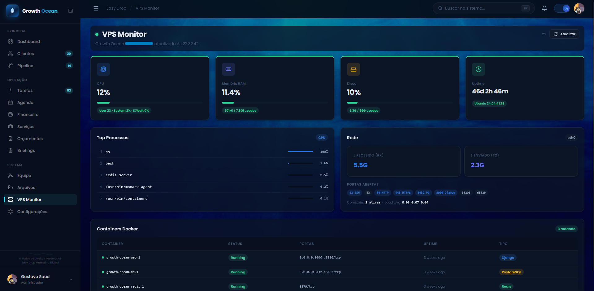

// sobre o projeto
Sistema web de gestão interna completo, construído do zero para a Easy Drop, agência de marketing digital. Centraliza toda a operação da empresa em uma única plataforma — do primeiro contato com o cliente até a entrega final do projeto. Substitui ferramentas dispersas por um CRM, ERP e task manager integrados, feitos sob medida para o fluxo da agência.
// screenshots

Tela de login

Módulo de monitoramento (VPS)
// módulos
- Dashboard — KPIs em tempo real, gráfico financeiro (6 meses) e feed de atividade recente
- CRM · Clientes — ficha completa, histórico financeiro e link público de cadastro com anti-bot
- CRM · Pipeline — kanban de leads com drag & drop e múltiplos pipelines
- CRM · Serviços — catálogo com categorias e preços
- Tarefas — kanban com colunas configuráveis, prioridade, prazo e responsável
- Financeiro — receitas, despesas, recorrências e endpoint de resumo por período
- Orçamentos — wizard 4 etapas com link público de aprovação pelo cliente
- Briefings — formulários por serviço com endpoint público de resposta
- Arquivos — upload, pastas, storage stats e integração com Google Drive API
- Agenda — calendário com views dia/semana/mês e integração Google Calendar API
- Equipe — membros, permissões por nível e convites
- Configurações — perfil, notificações e 12 integrações externas
// funcionalidades em destaque
- Funil de captação visual estilo Kanban — do lead ao cliente fechado
- Módulo financeiro com controle de receitas, despesas e recorrências
- Geração automática de contratos em PDF após aprovação de orçamento
- Integração com Google Calendar para agendamentos e reuniões
- Integração com Google Drive para gestão de arquivos em nuvem
- Portal do cliente para acompanhamento do projeto em tempo real
- Cadastro público com proteção anti-bot (honeypot + email único)
- SPA hash-based com roteamento dinâmico em JavaScript vanilla
- Badges dinâmicos na sidebar via contexto Django
- Filtro de tarefas por usuário logado com toggle "ver todas" para staff
- API consolidada de dashboard em uma única chamada
// infraestrutura & deploy
- VPS Hostinger — Ubuntu 24.04 LTS · 2 vCPU · 8 GB RAM · 100 GB NVMe
- Nginx como proxy reverso + servir arquivos estáticos
- HTTPS com certificado Let's Encrypt (renovação automática via Certbot)
- UFW + Fail2ban configurados para segurança do servidor
- Docker Compose orquestrando Django + PostgreSQL
- Domínio: ocean.easydropdigital.com.br
// roadmap
- ✅ Fase 1 — Fundação: Django 5.1 + PostgreSQL + Docker (Mar 2026)
- ✅ Fase 2 — Núcleo CRM: clientes, serviços e pipeline (Mar 2026)
- ✅ Fase 3 — Operação: tarefas, financeiro, orçamentos, briefings e arquivos (Mar 2026)
- ✅ Deploy VPS — Migração Railway → Hostinger com Nginx + SSL (Abr 2026)
- ✅ Fase 4 — Website institucional com formulário integrado ao pipeline (Mai/Jun 2026)
- ✅ Fase 5 (parcial) — Google Drive API + Google Calendar API integrados
- 🔜 Asaas — cobranças automáticas, boletos e PIX
- 🔜 WhatsApp Business — notificações automáticas para clientes
- 🔜 Rate limiting com Redis + automações via Zapier
- 🔜 Portal do cliente + versão mobile
// stack técnico
Django 5.1
Django REST Framework 3.15
PostgreSQL 16
Docker + Compose
Nginx
JavaScript Vanilla (SPA)
Let's Encrypt / Certbot
Google Calendar API
Google Drive API
Hostinger VPS
// links